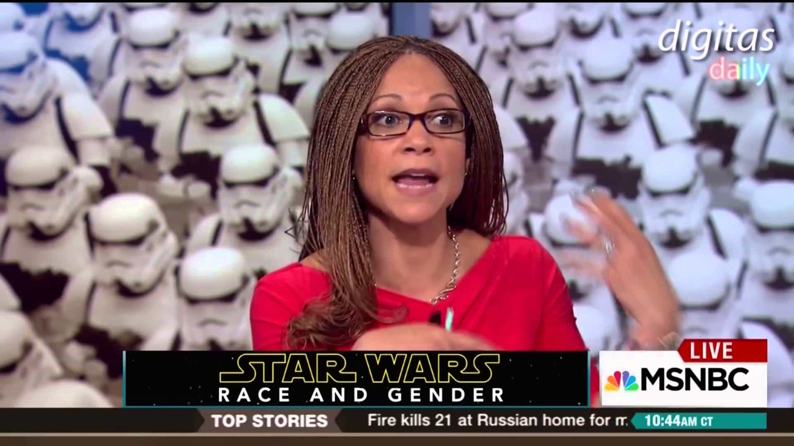
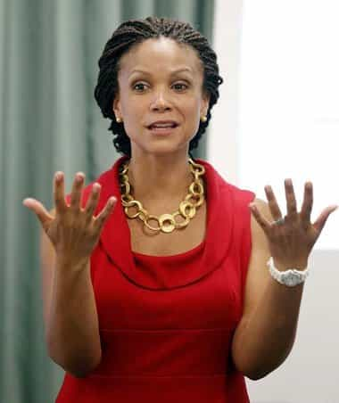

< < < Back
SJW Melissa Harris-Perry Has Meltdown When Her Race-Baiting TV Show Is Cancelled – Return Of Kings
Melissa Harris-Perry, best known for mocking Mitt Romney and his adopted black grandchild, has launched an epic tantrum after MSNBC chose to focus on the Presidential primary season instead of her “race and diversity” television program. She claimed her employer, who had put up with her mediocre ratings for an extended time, was “racist” and began boycotting her own show, if that is even possible. MSNBC’s response was to cancel her show (and fire her personally) on February 28, after escalating patterns of histrionic behavior.
The two-hour show, named Melissa Harris-Perry, began its syndication just over four years ago, but during that time MSNBC has invariably lagged behind both CNN and Fox in the ratings. Despite widely being viewed as the leftwing version of Fox, the media group has struggled to find the regular viewership of its News Corporation-owned rival. Slowly, executives there have realized the need for more rigorous reporting of news, not handouts of airtime charity to SJWs like Harris-Perry.
In a move befitting of a woman naming 120 minutes of televised talking after herself, Harris-Perry tearfully claimed that she was being “silenced” by MSNBC. This speaks volumes about the mentality of race baiting SJWs like her. When you become upset that your personal narcissism factory is playing second fiddle to the nomination processes for President in the world’s most powerful country, populated by 330 million people, you know you think far too highly of yourself.
The dilemma facing her, however, is that she was just not bringing in the proverbial bacon for the network. Someone like Bill O’Reilly of Fox can get angry at the world or life in general because he has the highest rating cable news program. He, unlike Melissa Harris-Perry, is also aware of the imperatives of business and profit-making. News networks are not deliberately loss-creating fantasies.
If “diversity” is so vogue, why did her show eviscerate itself and its ratings?

In dark times characterized by ISIS, the Ukrainian conflict and the risk of global financial collapse, only Melissa Harris-Perry brought you hard-hitting news coverage, like this fabulous story.
Times have never been better for delusional SJWs, particularly those of the race baiting variety. So why did Melissa Harris-Perry’s Melissa Harris-Perry (I love saying it this way) struggle so badly and for so long? You already know the answer. While the rest of the population, even the vast majority of leftwing voters, are out living their lives and being reasonably productive members of society, a small but preposterously vocal minority has been trying to make themselves look much bigger and more important than they actually are. From Black Lives Matter to Feminist Frequency, these related groups do not command the sort of audience that MSNBC can profit from.
Still, these SJWs are squandering some spectacular examples of political correctness over past months and years. The recent Oscars furore, where self-promoting actors and actresses forgot the overrepresentation of black performers in terms of nominations and wins since 2000, has been a boon for anyone interested in not just ignoring facts but also deliberately twisting them. That Melissa Harris-Perry’s show was canceled on the exact same day of the Oscars is an irony more supreme than any other I can imagine.
And this Oscars beat-up comes hot on the heels of the self-defense killing of Michael Brown by Officer Darren Wilson in Ferguson, Missouri, a topic Melissa Harris-Perry took every opportunity to misrepresent and lie about. The aftermath of this shooting incident played throughout 2015, illustrating the rabid propensity of SJWs to interfere with and plain reject investigatory procedures, then claim that any carefully drawn together findings are “cover-ups.” Nevertheless, the release of a Federal Department of Justice report irrefutably confirmed via (black) witness testimony, plus ballistics reports and other expert statements, that African-American Brown was the aggressor and criminally tried to take Wilson’s gun.
Compare this gerrymandering of current events to suit SJWs to the non-existent advantaging and even persecution Return of Kings receives. Facing down 1,600 slanderous articles from vested media interests, we successfully attracted tens of thousands of regular new readers in February, all without the financial largesse of an MSNBC or New York Times. If Melissa Harris-Perry could not making a one-egg omelette with the countless chickens she received, something is deleteriously wrong with her message.
Do not bite the hand that feeds you

“They can’t fire me, the Oprah of MSNBC, surely?”
It is clear that MSNBC either stoked Melissa Harris-Perry’s sense of privilege and vanity, or did not do enough to file it down considerably in the early stages of her time with the network. Whichever answer is the correct one remains to be seen, but we can attribute the real blame for her massive fall firmly and squarely on Harris-Perry herself. SJWs, including the wacky “academic” kind she represents, have long regarded themselves as invincible (or huge victims when their “God mode” runs out of steam). Well, first Harris-Perry’s ratings and now her virtual firing have dispeled that illusion, albeit probably not in her own mind.
Once again, we have been presented with a wonderful addition to our ever-expanding album of “SJWs Who Do Our Work For Us.” It is tempting to just get angry at Melissa Harris-Perry, or curse MSNBC for why they ever had her featured so prominently on their network. But why? Of course, my preference would be that she had never (dis)graced television screens in the first place. Irrespective of the mistake that was made, though, the cause of common sense always benefits when SJWs conclusively prove with their own efforts that they should never have been hired.
Tragically, beyond SJWs, the usual suspects, prima donna antics like Melissa Harris-Perry’s are found in countless other women, too. An article I wrote last week, for example, exposed readers to it’s-all-about-me syndrome sufferer Nina Paunova, who killed herself after her boyfriend, who promptly dumped her, figured out she was using him for money and gifts. The week before that, we learned about truly depraved false rape accuser and Game of Thrones actress Souad Faress.
Appearing like disparate situations to some, they are actually all intricately related testaments to female self-entitlement gone mad. Expect many more of them going forward, potentially through ever worsening permutations.
We can only hope that MSNBC will learn its lesson this time. Ha, unlikely!
Read More: Fake Conservative Megyn Kelly Exposes Her Anti-Trump Agenda During Presidential Debate